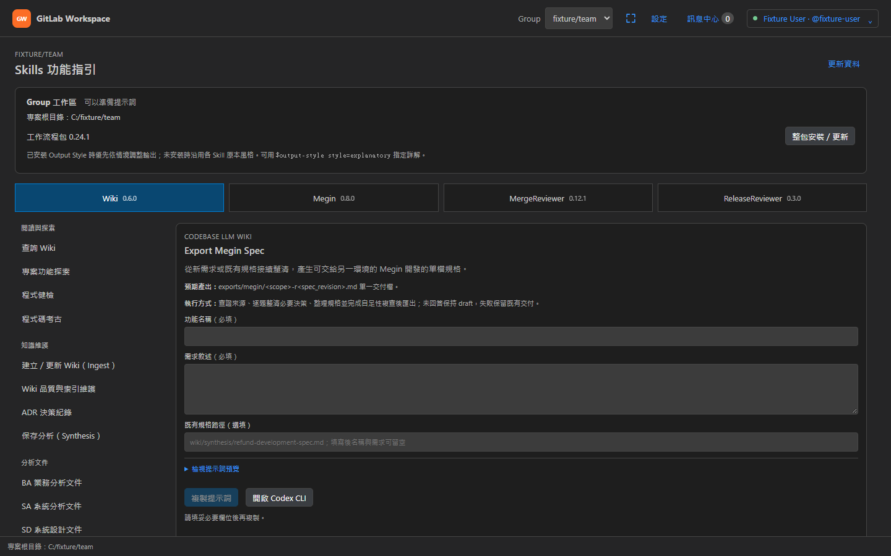
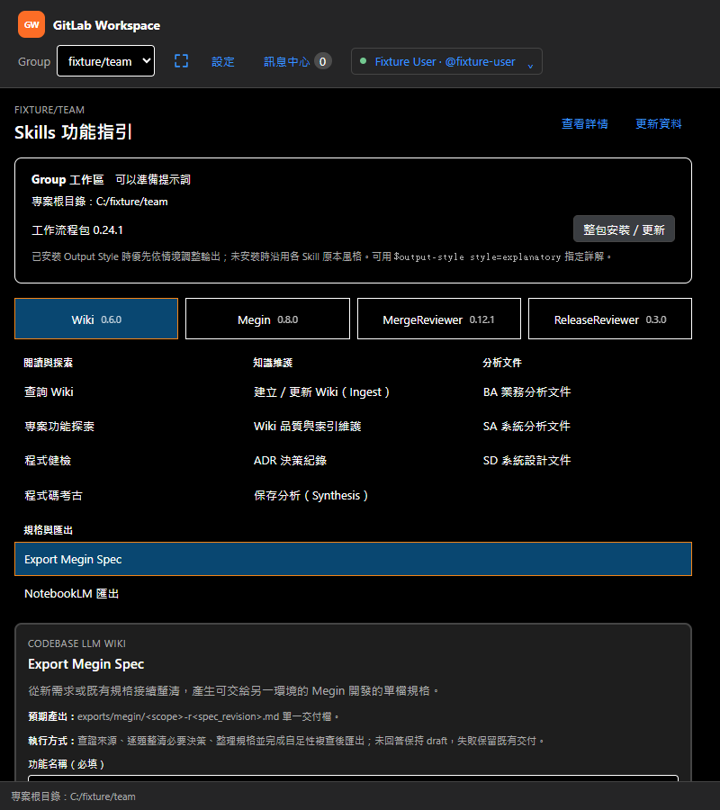
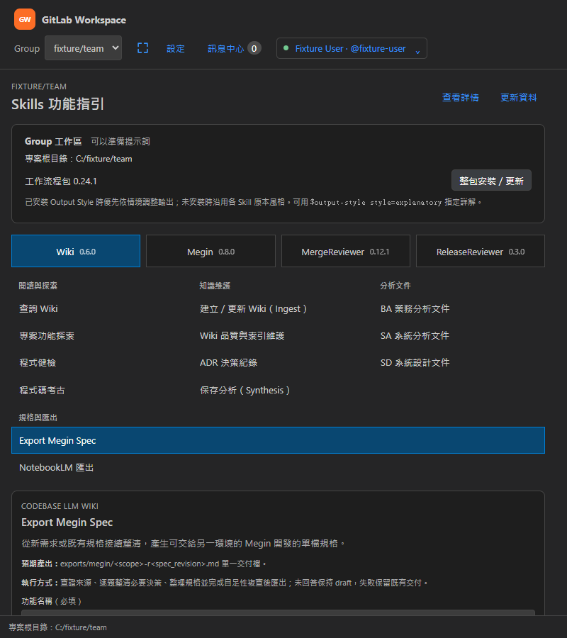
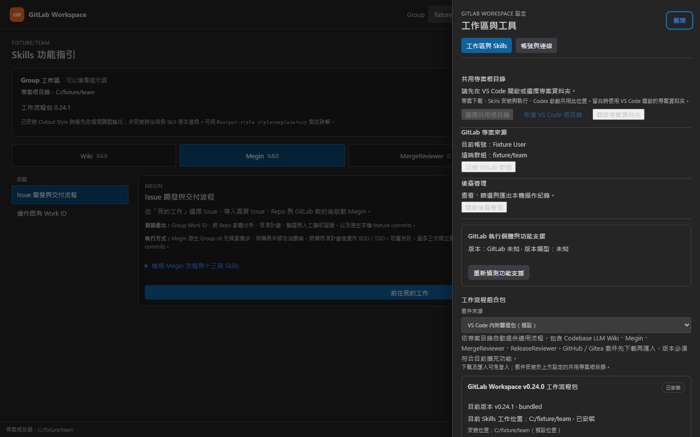
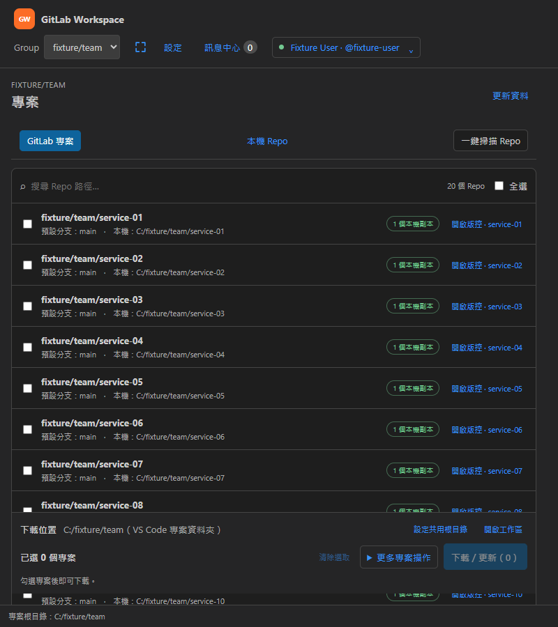
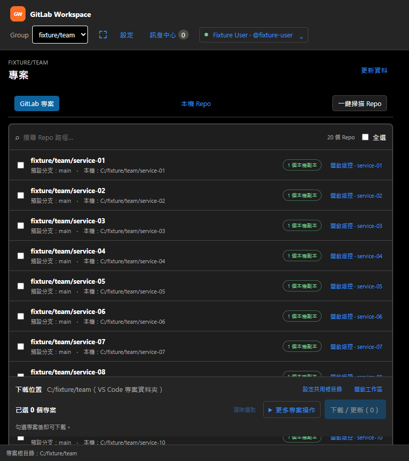
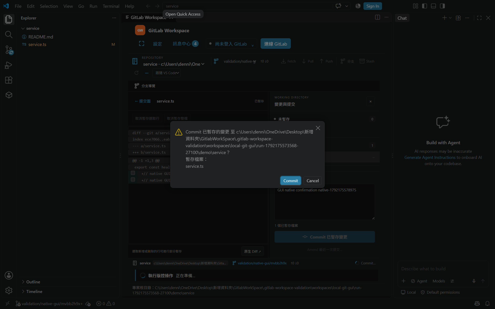
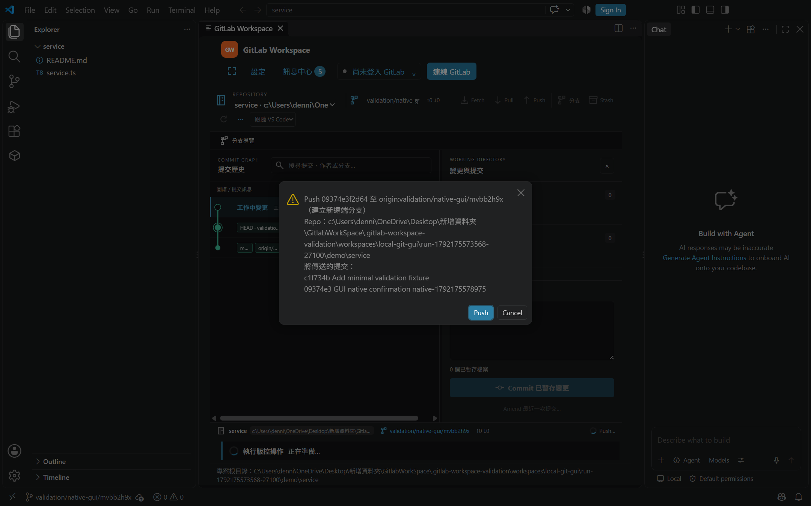
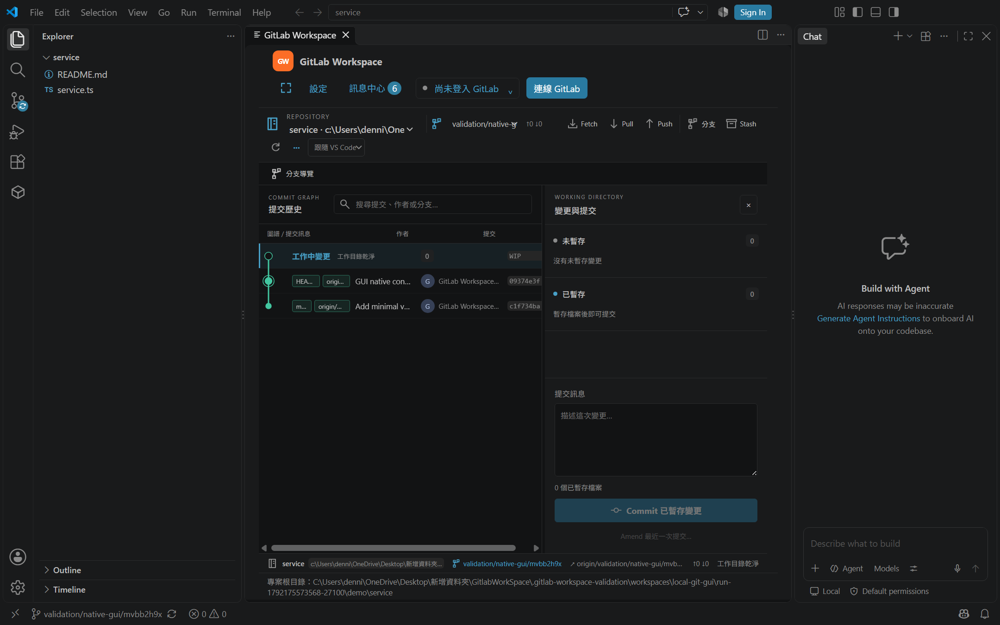

新版 VSIX
gitlab-workspace-0.25.0.vsix5,608,018 bytes；SHA-256：
6a8176b43b9a8ce8a2278b1f722eba508541d9fd77606aa8da163da9efa107c7
統一每次 UI 操作的接受、執行、完成與失敗恢復；以最終完整測試、同方法正式效能採樣及可追溯封裝驗收。
PASS_LOCAL_VALIDATION · 122／122 證據檢查通過本機驗證完成：final-v3 完整 npm、封裝、paired-v3 正式效能、完整 GUI v5、原生確認 v3 與 14 張 Codex 視覺檢查均通過，受測同一 6a8176b4… VSIX。verification.json由原始證據生成，122／122 檢查 PASS；歷史失敗保留，不改寫為成功。本次未使用真實 GitLab credentials，真實伺服器驗證為 NOT_RUN。
| 驗證項目 | 新版狀態 | 證據範圍 |
|---|---|---|
| Unit tests | 360／360 通過 | final-v3 unit log。 |
| Browser behavior | 105／105 通過 | final-v3 Browser log；含 Git 預檢終態、open／refresh 重試與 Skills 連續 35 次快照回歸。 |
| Extension Host | 13 passing／2 opt-in pending | 真實 VS Code 1.90 Host；stage 20.072 秒、exit 0。有 1 條原生 label model 警告，詳見紀錄。 |
| Issue／Connect BDD | 30／140 與 10／35 通過 | Issue：30 scenarios／140 steps；Connect：10 scenarios／35 steps。 |
| Release tooling | 34／34 通過 | final-v3 release tooling log。 |
| Python release suites | 14 suites 成功；208 通過／1 skip | 209 個 unittest 案例；symbolic link 因 WinError 1314 跳過 1 項，無失敗；各 suite logs。 |
| 編譯、types、Webviews／kit build | PASS | compile · types · dashboard · sidebar · kit。 |
| Git lifecycle-only 終態與重試 | PASS（包含於 105 項 Browser） | 只有預檢失敗回執時會釋放等待、保留輸入並允許重試；舊終態不清掉新 owner。初始 open、取消與全域重試也有回歸驗收。 |
| 完整 npm／release／package | PASS · 690.043s／4 workers／30 stages | timings.json · prepared.json · 產物驗證。 |
| 成對正式效能 v3 | 8 類首次回饋／4 項回歸 gate／8 smoke PASS | baseline-v3 · revision-v3；兩版各 800 feedback、300 導覽與 300 搜尋採樣。 |
| 原生確認與未知寫入 GUI | PASS · VS Code 1.142.0 | native-v3 JSON；33.64544 秒、cold-start 記錄 220.53ms，受測同一 6a8176b4…。 |
| 完整本機 Git GUI v5 | PASS · VS Code 1.90.0／exit 0 | v5 JSON · run log；6 passing、1 opt-in pending，cold-start 記錄 248.01ms。7 項相容性、5 段 60 秒閒置與進階操作全部通過。 |
| Codex 視覺檢查 | 14／14 PASS | visual-qa-v3.json；6 張正式量測與 8 張原生 UI 圖片逐一以 view_image 檢視，非真人審查。 |
| 原始證據交叉驗證 | PASS_LOCAL_VALIDATION · 122／122 | verification.json；核對實際 suite totals、fresh prepared receipts、相同 artifact SHA、原始效能樣本、GUI trace 與視覺實檔。 |
原生 GUI 結果與Git trace2 原始紀錄證實 stale lease 被拒絕後保留寫入鎖、允許唯讀 refresh；refresh 實際執行 Git status 並 exit 0。Push 次數依序為 1 → 2 → 2 → 2，沒有因刷新或核對而自動重送。
測試 driver 在真實 Workbench DOM modal 點擊「已確認未執行」，只更新回執並解除鎖；本機與遠端 SHA 均維持核對前的值。這是實際 UI 互動，非真人輸入。Commit、Push、Force Push、unknown／refresh／結果核對及解除畫面已包含於 14 張 Codex 視覺檢查。
| 閒置階段 | 實際時間 | Extension commands／aux／native API 增量 | VS Code 原生 Git 背景增量 |
|---|---|---|---|
| open | 60,011 ms | 0／0／0 | 0 |
| select-file | 60,004 ms | 0／0／0 | 0 |
| stage | 60,013 ms | 0／0／0 | 3 |
| commit | 60,006 ms | 0／0／0 | 0 |
| hidden | 60,005 ms | 0／0／0 | 0 |
五段 extension 指令、輔助指令及 native API 增量皆為 0；VS Code 內建 Git 在 stage 閒置段有 3 次背景活動，獨立列示，不算成本 extension 輪詢。
7 項相容性全部 PASS：annotated／lightweight tags、detached HEAD、empty Repo、快速切換、linked worktree、submodule，以及 Webview 銷毀後還原草稿。
進階操作全部 PASS：Stash save／pop／drop 與 discard 復原點；Fetch／Pull；互動 Rebase 的 pick、reword、edit、squash、fixup、drop 及 pause／continue；Amend；成功 Force-with-lease；Merge 與 parent Diff；Revert／Cherry-pick。
最後的 stale lease 保持 failed/effect=unknown：寫入停用、唯讀 refresh 實際執行且沒有重送 Push，本機與遠端 SHA 保持各自核對值。此一般 GUI run 保留未知鎖；真實 modal 解除由 native-v3 另行驗證。
1.90 Extension Host 測試中的 Commit／Push 決策使用 test adapter，raw report 將 interactiveConfirmationUI 明列 BLOCKED；此部分沒有冒充真實 modal。1.142.0 standalone native-v3 以真實 Workbench DOM 點擊 Commit／Push／Force Push／結果核對，補足實際對話框驗證。
完整 GUI v5 最後狀態截圖亦已由 Codex 額外目視通過；這張不併入既有 14 張正式量測／原生 UI 的視覺契約。
在 repository 根目錄、已具備 Node dependencies、編譯輸出及本次 VSIX 的 Windows 環境執行。v5 driver 由保存的準備程式重建，scope manifest記錄固定四處允許變換、canonical／corrected bytes 與保留的 v4 FAIL；產品、tests、scripts 與 60 秒閒置斷言不變。
node docs/work/work-20261017-operation-state/evidence/prepare-workspace-scope-driver.mjs
$env:VSCODE_EXECUTABLE_PATH = (Resolve-Path '.vscode-test/vscode-win32-x64-archive-1.90.0/Code.exe').Path
node docs/work/work-20261017-operation-state/evidence/git-gui-final-v5/fixture-driver.mjs --local-git-gui --vsix dist/gitlab-workspace-0.25.0.vsix --evidence-dir docs/work/work-20261017-operation-state/evidence/git-gui-final-v5真實 modal 的 standalone 使用安裝版 VS Code 1.142.0。以下環境變數指向該版本，再執行原生確認流程：
$env:VSCODE_EXECUTABLE_PATH = Join-Path $env:LOCALAPPDATA 'Programs/Microsoft VS Code/Code.exe'
node scripts/run-live-extension-tests.mjs --local-git-gui --native-confirmation --vsix dist/gitlab-workspace-0.25.0.vsix --evidence-dir docs/work/work-20261017-operation-state/evidence/git-gui-native-v3原始證據與 Codex 視覺 receipt 齊備後，使用下列命令重新交叉驗證。缺檔、失敗狀態、過期 preparation 或 artifact SHA 不符都會非零結束；程式不會代為執行測試或核准視覺檢查。
node docs/work/work-20261017-operation-state/evidence/generate-verification.mjs正式 baseline-v3 與 revision-v3 各完成 10 輪、每輪 30 筆導覽及搜尋，另有 8 類操作各 100 筆首次回饋。修正版 800／800 筆採樣完整，8 類 P95 皆在 100ms 內；兩版各 8 項 smoke 通過。所有 round、case 與 smoke 的 runtime errors／blocked network requests 均為 0。
| 首次可見回饋（各 100 筆） | Baseline v3 P95 | Revision v3 P95 | 修正版驗收 |
|---|---|---|---|
| 側欄導覽 | 195.0 ms | 34.3 ms | 100／100，PASS |
| 選取 Issue | 34.1 ms | 34.2 ms | 100／100，PASS |
| 選取 MR | 34.6 ms | 34.2 ms | 100／100，PASS |
| 更新資料 | 34.8 ms | 34.3 ms | 100／100，PASS |
| 檢查 Skills | 195.1 ms | 34.4 ms | 100／100，PASS |
| 送出帳號驗證 | 29.5 ms | 29.4 ms | 100／100，PASS |
| Git 讀取 | 34.2 ms | 34.3 ms | 100／100，PASS |
| Git 寫入 | 34.3 ms | 34.6 ms | 100／100，PASS |
| 回歸指標 | Baseline v3 | Revision v3 | 差異／驗收 |
|---|---|---|---|
| 暖啟導覽 P95 | 28.6 ms | 30.6 ms | +6.993%，PASS |
| Repo 搜尋 P95 | 33.3 ms | 31.3 ms | −6.006%，PASS |
| Renderer retained heap P95 | 6,787,056 B | 7,160,184 B | +5.498%，PASS |
| Renderer retained heap 最大值 | 6,787,124 B | 7,160,256 B | +5.498%，PASS |
首次回饋的主要改善出現在側欄導覽與 Skills 檢查；其餘操作維持約 29–35ms。暖啟導覽與 retained heap 有上述增加，均在既定 10% 回歸上限內；不將全部指標描述為加速或減量。
| 操作 | Baseline mock 完成 P95 | Revision mock 完成 P95 |
|---|---|---|
| 側欄導覽 | 231.2 ms | 230.0 ms |
| 選取 Issue | 230.8 ms | 231.3 ms |
| 選取 MR | 230.1 ms | 232.9 ms |
| 更新資料 | 230.9 ms | 230.8 ms |
| 檢查 Skills | 232.0 ms | 231.8 ms |
| 送出帳號驗證 | 230.4 ms | 233.1 ms |
| Git 讀取 | 229.8 ms | 230.7 ms |
| Git 寫入 | 229.7 ms | 231.3 ms |
Mock acknowledgement 固定 160ms、completion 固定 220ms。完成時間包含這些人為延遲與排程，不能視為 GitLab API、網路或遠端寫入變快。首次回饋以腳本 DOM click capture 起算，到對應選取／停用／進度後等待一個 requestAnimationFrame；導覽與搜尋從瀏覽器內先建立的 DOM observer 等待兩個 requestAnimationFrame，不包含原生輸入送達時間。
methodVersion：browser-capture-readiness/v2。兩版使用同一 20 Repo fixture、Windows x64／Node v24.21.0／Chromium 155.0.8059.80。Driver 僅等待瀏覽器內已啟動的 readiness promise；搜尋核對輸入值與有序 Repo 路徑。記憶體取 GC 後的 Runtime.getHeapUsage，包含父頁及兩個同源 Webview。影格排程、GC、儀器與機器負載仍可能產生雜訊。
harness SHA-256：014a198fbf2a0da93cb6a740b9df0b0e96be3180a61a0fd290379c3f172fc962
fixture SHA-256：645979d4ea2f3e7d1dbda1cac32165b02d91cb2b037352f220c8438a305b76d9
原始 baseline VSIX SHA-256：dd1194e9266441f25c66d2355cc487890d5e38cb4eb90d17a93868eae18433dd
revision VSIX SHA-256：6a8176b43b9a8ce8a2278b1f722eba508541d9fd77606aa8da163da9efa107c7
baseline-v3 JSON SHA-256：8f7fadfb4b956816e2532d50f2e988313c551d5f3fb65da9e7818040e1e4054e
revision-v3 JSON SHA-256：4fbfa22aed78f0bb6aeeb3695c1771bf8bcb1befe0c5116ee223dd388ac04502。未重採樣或改 gate；先前失敗與 v2 紀錄另行保留。
5,608,018 bytes；SHA-256：
6a8176b43b9a8ce8a2278b1f722eba508541d9fd77606aa8da163da9efa107c7
kit SHA-256（內容維持不變）：
73c12ab95eaf25f6a7ca05cda176601f47178e51bddb3709d4aab3e92f07ce4e
30 個 stage 的完整 logs；歷史候選保留於後段摺疊紀錄。
皆對應本節 VSIX SHA；122／122 證據檢查 PASS。80 個直接複製檔逐 byte 一致，0 mismatch／0 missing；排除 VSCE 轉換 README 與封裝 metadata。
Base commit：8cb5b1182fcd6d1c678b7ba4ec0e80ee8796ce4d 加上未提交 worktree。final-v3 輸入 fingerprint：
7834e7c62215d13b09a799995ffdf62f1f8b5271430aff42fc4ae89ea63e309c
輸出 fingerprint：
9bb63dfb2baa111648f3e4e941f978baee5274f1a1602cab1d6889cd209d15ec




分頁、抽屜、搜尋條件、目前選取與輸入草稿保留在 UI；純本機互動立即更新，避免不必要的全頁等待。
共用 ActionController 與 policy，管理排隊、執行、成功、失敗、取消、資源互斥、重試及待確認寫入。
Repo、Issue、MR、帳號、Skills 與工時保留各自資料與版本；Host 回執和快照負責將實際結果送回 UI。
明確分類 local、read、write 與 control，宣告資源、並行規則、通知及重試能力。最新選取優先、相同讀取共用、寫入互斥使用同一套規則；共用讀取時沿用實際 correlation ID。
工作台、Issue、側欄與命令入口共用一個 tracker。預檢拒絕也有終態；同一 operation ID 不重複執行，回執可重播。快照附 session、revision 與操作範圍，可重新對帳遺漏回執。
操作狀態同步建立，控制項依自身資源更新。refresh 與 MR 各自持有 busy owner；Clone 百分比更新以 150ms 合併，開始與終態立即送出。Skills 呈現等待、檢查、驗證及安裝階段。
修正 core history 保留、快照批次套用與 Feedback 延後重播；Git 在送出前登記請求，避免同步 Host 回覆被丟棄或完成後重掛 pending。Git／Issue 以資源篩選訂閱，側欄改用局部 selector 與穩定摘要，減少無關重繪。
使用 connection epoch、帳號／Group 與專案 revision 隔離操作；過期讀取取消。Issue 由 Host 正規化 project／iid，讓編輯與關係操作共用同一資源鎖。
保留原提交文字、草稿與 correlation；MR 留言與回覆在失敗或 effect=unknown 時保留。確認成功只清除對應的已提交文字，保留送出後的新編輯。未知結果先阻擋重送，再以 MR 標記、工時確認或原生人工核對取得明確結果；Host 重啟後只匯入已人工確認的回執 metadata。
Scan、Clone、Sync 的錯誤、取消及部分完成對應實際結果。已套用寫入若重新載入失敗，保留 effect=applied 與 refreshError；使用者可以重新載入資料，無須再次寫入。
Invalid model for label change, rebuilding 環境警告；13 個案例通過且 stage exit 0，共 20.072 秒。新版未出現候選三的 fileWatcher EPERM／utility crash 訊息；不將全 log 宣稱為零警告。最終交付判定：PASS_LOCAL_VALIDATION。新版完整 npm、封裝、paired-v3 正式效能、完整 GUI v5、native-v3 與 14 張 Codex 視覺檢查均通過，122／122 證據交叉檢查成功。此結論涵蓋本機與隔離 mock／bare remote；真實 GitLab 伺服器驗證為 NOT_RUN。
下列為過程紀錄。候選一的正式 FAIL 不改判；候選二診斷不替代正式 v2 gate，也不與舊 baseline 交叉計算改善幅度。
v4 JSON與原始 run log保留 FAIL（5 passing、1 pending、1 failing）：空 Repo 的 native API 回傳 null。唯讀檢查本機 1.90 原生 Git source 後，確認 never 設定會拒絕 service workspace 外的 sibling Repo；此時產品尚未接手，不歸因為產品開啟空 Repo 的錯誤。
v5 僅將 docs fixture 的 .code-workspace folder 由 service 改為 demoRoot，使隔離 sibling Repo 都在測試 workspace 範圍內；never 設定、out／tests、60 秒閒置斷言、VSIX、產品及 scripts 均維持凍結。fixture 修正 manifest維持 PREPARED setup receipt，另以v5 原始結果 PASS證明完整實跑；獨立 exact-byte 審計與 verifier 核對 canonical／corrected driver、允許變換及被保留的 v4 失敗雜湊。
新版 Host log記錄 13 passing（案例約 17 秒）、2 項 opt-in pending，stage exit 0、共 20.072 秒；有 1 條 Invalid model for label change, rebuilding。全文未出現舊候選三的 fileWatcher EPERM 或 utility crash；這次警告與歷史警告分開記錄，不宣稱全 log 零警告。
以下完整表格、產物 receipt 與截圖全部屬舊候選三 7c018fba…。原結果保留不改判，但不作為修正後 final-v3 的通過證據。
| 驗證項目 | 候選三 full-v2 結果 | 證據／範圍 |
|---|---|---|
| Extension Host | 13 passing／2 opt-in pending | 最終 Host log；2 項為本機 Git GUI 與真實 GitLab／CDP，後者未執行。 |
| Unit tests | 358／358 通過 | 最終 unit log；scope／session、去重、未知寫入、快照與資源鎖等。 |
| Browser behavior | 99／99 通過 | 最終 Browser log；包含 Git 同步 Host 回覆與 Skills 連續 35 次完整快照／終態回執案例。 |
| Issue BDD | 30 scenarios／140 steps 通過 | 最終 Issue BDD log |
| Connect BDD | 10 scenarios／35 steps 通過 | 最終 Connect BDD log |
| Release tooling | 34／34 通過 | 最終 tooling log |
| Python release suites | 14 suites 成功；208 通過／1 skip | 209 個 unittest 案例；output style 的 symbolic link 案例因 WinError 1314 跳過；最終各 suite logs。 |
| 編譯、types、Webviews／kit build | PASS | compile · types · dashboard · sidebar · kit |
| 完整 npm／release／package 驗證 | PASS · 786.275s／4 workers | 最終 timings.json · 最終產物驗證 log |
| Codex 視覺檢查 | 6／6 已檢視，PASS | 檢視全部最終 Revision v2 截圖，並對照 baseline v2 設定／專案；版面一致，未見新水平溢出、遮擋或樣式破壞。高對比為 fixture 模擬。 |
| 原生 Commit／Push 確認 GUI | PASS · VS Code 1.142.0 | 原生確認結果；當時候選三 7c018fba…、隔離 local bare remote，3 張確認／完成截圖均已由 Codex 視覺檢查。 |
| 完整本機 Git GUI | 待 fixture 修正後重跑 | 保留 WebSocket、未知結果等待與 bootstrap revision 競態的原始失敗；下一輪以 workspace 容器避免測試自行重啟 Host。詳見失敗紀錄與重跑條件。 |
最終 logs 已保存於 evidence/validation-final，與候選一的 evidence/validation 分開。prepared.json 保存輸入與輸出 fingerprint。Opt-in pending 不計為已通過；Host log 含原生 fileWatcher 環境警告，詳見診斷紀錄。
| Suite | 案例數 | 結果 |
|---|---|---|
| Delivery overlay | 27 | 27 通過 |
| Group workflow | 3 | 3 通過 |
| Local review targets | 3 | 3 通過 |
| retired overlay | 56 | 56 通過；另含 discovery rules、material checker 與 all-local-Repo fixture 檢查通過。 |
| retired discovery | 1 | 1 通過 |
| retired spec export | 5 | 5 通過 |
| Output style | 3 | 2 通過、1 skip：Windows 缺少建立 symbolic link 的權限（WinError 1314）。 |
| Release manager | 35 | 35 通過 |
| Release reviewer integration | 7 | 7 通過 |
| Tool installer | 18 | 18 通過 |
| Workflow kit installer | 12 | 12 通過 |
| Workflow kit profiles | 16 | 16 通過 |
| Workflow kit sources | 3 | 3 通過 |
| Workflow kit transactions | 20 | 20 通過 |
| 合計（14 組） | 209 | 208 通過、1 skip，無失敗。 |
正式 baseline-v2 與 revision-v2 各完成 800 筆首次回饋、300 筆暖啟導覽與 300 筆 Repo 搜尋。修正版 8 類首次回饋皆通過 100ms P95 目標，4 項回歸指標皆在 10% 上限內；兩版各 8 項 smoke 通過，runtime errors 與網路錯誤均為 0。
v2 harness 的 methodVersion 為 browser-capture-readiness/v2：在瀏覽器內的操作 capture 階段先建立匹配 DOM observer 與兩個 requestAnimationFrame 的 promise，driver 只等待已啟動的 promise。Repo 搜尋同時核對輸入值與有序路徑，避免結果筆數相同即誤判 ready。
兩版同用 Windows x64、Node v24.21.0、Chromium 155.0.8059.80、20 Repo fixture。v2 harness SHA-256：014a198fbf2a0da93cb6a740b9df0b0e96be3180a61a0fd290379c3f172fc962；fixture SHA-256：645979d4ea2f3e7d1dbda1cac32165b02d91cb2b037352f220c8438a305b76d9。Baseline 與 revision 的資產／artifact hashes 均保存在各自 JSON。
| 首次可見回饋（各 100 筆） | Baseline v2 P95 | 候選三 Revision v2 P95 | 驗收 |
|---|---|---|---|
| 側欄導覽 | 194.5 ms | 34.6 ms | 100／100，PASS |
| 選取 Issue | 34.6 ms | 34.1 ms | 100／100，PASS |
| 選取 MR | 34.7 ms | 34.3 ms | 100／100，PASS |
| 更新資料 | 34.6 ms | 34.5 ms | 100／100，PASS |
| 檢查 Skills | 195.4 ms | 34.6 ms | 100／100，PASS |
| 送出帳號驗證 | 28.7 ms | 29.9 ms | 100／100，PASS |
| Git 讀取 | 34.4 ms | 34.5 ms | 100／100，PASS |
| Git 寫入 | 34.2 ms | 34.3 ms | 100／100，PASS |
| 回歸指標 | Baseline v2 | 候選三 Revision v2 | 差異／驗收 |
|---|---|---|---|
| 暖啟導覽 P95 | 28.1 ms | 30.0 ms | +6.762%，PASS |
| Repo 搜尋 P95 | 33.2 ms | 31.4 ms | −5.422%，PASS |
| Renderer retained heap P95 | 6,787,320 B | 7,149,740 B | +5.340%，PASS |
| Renderer retained heap 最大值 | 6,787,380 B | 7,149,752 B | +5.339%，PASS |
| 封裝 UI smoke | 8／8 PASS | 8／8 PASS | PASS |
| Runtime／網路錯誤 | 0／0 | 0／0 | PASS |
| 操作 | Baseline mock 完成 P95 | Revision mock 完成 P95 |
|---|---|---|
| 側欄導覽 | 231.0 ms | 234.9 ms |
| 選取 Issue | 230.8 ms | 232.5 ms |
| 選取 MR | 230.9 ms | 231.8 ms |
| 更新資料 | 231.4 ms | 231.4 ms |
| 檢查 Skills | 230.9 ms | 230.9 ms |
| 送出帳號驗證 | 232.5 ms | 232.6 ms |
| Git 讀取 | 231.1 ms | 231.4 ms |
| Git 寫入 | 229.8 ms | 234.1 ms |
固定 mock acknowledgement 160ms、completion 220ms，完成量測包含人為延遲與排程，不能解讀為 GitLab API、網路或遠端寫入變快。首次回饋改善與上述 mock 完成時間分別驗收。兩版採樣使用相同 harness／fixture／browser；GC、影格排程與機器負載仍可能產生量測雜訊。
5,607,335 bytes；SHA-256：
7c018fba6fe5df7cdfea6c2a3296a5aa72e6c806aa4ed86e0dabc81ab8dfa5c1
歷史 kit SHA-256：
73c12ab95eaf25f6a7ca05cda176601f47178e51bddb3709d4aab3e92f07ce4e
候選三所有 logs；完整 npm 786.275 秒、4 workers，status=success。
最終畫面證據；首次回饋、4 項回歸 gate 與 8 項 smoke 通過；6／6 截圖Codex 視覺檢查通過。
候選三 Base commit：8cb5b1182fcd6d1c678b7ba4ec0e80ee8796ce4d 加上當時未提交 worktree。full-v2 輸入 fingerprint：
319bf0abfd54a8c265358d1902b7f1d5dfdf4c540eec165c0cb6303e49ee7460
full-v2 輸出 fingerprint：
d53caafe33d88eba025a4d58d7a1153e2de7766878bae538a5b93026f48c25a3
預檢產品修正前的 test-only 附驗另有before／after receipt：修正後 inputs 2e08629716aa5702510b717e6d3de0f37febc1151b4903be756ec5d633dac674、outputs da691c69e8d0127048bc67526ad349322e7a1b83c72e0783d8ee8a5c47b6808c，只描述當時候選三的 test-only 附驗。相同檔名的封裝一致性報告現已重新核對新版 6a8176b4… 的 80 個檔案，屬主區新版證據，不拿來替代候選三的歷史 receipt。
候選一 SHA 783076… 僅對應後段保存的 candidate1.vsix，不與本節可變動的 dist 連結配對。





已由 Codex 視覺檢查上述 6 張最終畫面，並對照 baseline v2 的設定與專案畫面；未見新水平溢出、遮擋或樣式破壞。高對比採 VS Code class／theme tokens fixture 模擬，不代表作業系統輔助技術驗證。
以下是候選一完整 npm 紀錄：測試與封裝通過，但後續正式效能未達標，屬歷史追溯資料。
| 驗證項目 | 主要驗收內容 | 候選一結果 | 數量／證據 |
|---|---|---|---|
| 編譯與型別檢查 | Extension Host、Webview 與共用 protocol／policy 一致；Webview 與 kit 建置。 | PASS | 編譯、types、dashboard、sidebar、kit 全數通過。 |
| Unit tests | 去重、scope／session、回執對帳、資源鎖、未知寫入、登入與秘密保護。 | PASS | 351／351 通過。 |
| Browser behavior tests | 立即回饋、連續點擊、joined correlation、過期回覆、草稿、未知寫入及局部恢復；包含新增 MR 留言／回覆草稿案例。 | PASS | 96／96 通過。 |
| Issue BDD | Issue 使用流程與行為情境。 | PASS | 30 scenarios／140 steps 通過。 |
| Connect BDD | 連線、帳號與驗證流程。 | PASS | 10 scenarios／35 steps 通過。 |
| Release tooling tests | Release 工具與檢查流程的測試案例。 | PASS | 34／34 通過。 |
| Python release suites | 14 組 installer、workflow、overlay、來源及整合驗證。 | PASS | 209 個 unittest 案例：208 通過、1 個環境限制 skip；詳見下方分組表。 |
| Extension Host | 隔離 VS Code Host 的啟動、命令、帳號、Repo 與工作台整合。 | 13 passing | 完整 npm run：13 項通過、2 項 opt-in pending；VS Code 1.90.0 Host 設定。 |
| 本機 Git GUI | 隔離本機 Repo 的讀寫、取消、已套用結果及原生確認流程。 | 候選一完整 run 未啟用 | 後續獨立 fixture 與最終狀態見GUI 驗證紀錄。 |
| 封裝 UI smoke | 1440／800 寬度、鍵盤操作、焦點、抽屜及高對比版面。 | PASS：候選一 | 基準與候選一各 8 項通過；最新結果見前段。 |
| VSIX package／release checks | 候選一封裝內容、來源驗證與 artifact 雜湊。 | PASS | 候選一封裝成功；候選一 VSIX／kit payload 與 SHA256SUMS 一致。 |
| Extension Host opt-in 案例 | 一項為本機 Git GUI；另一項為需真實 GitLab 認證與 CDP 的整合案例。 | Pending（2 項） | 本機 Git GUI 將另行執行並記錄結果；真實 GitLab 案例未執行。兩項 pending 不計為已通過。 |
候選一完整 npm validation：timings.json 記錄 mode=all、status=success、4 workers、686.248 秒及各階段命令／exit code；prepared.json 保存該候選輸入 fingerprint。完整 log 副本與原始 run 目錄可供追溯。上述成功狀態不涵蓋後續正式效能驗證。
| Suite | 案例數 | 結果 |
|---|---|---|
| Delivery overlay | 27 | 27 通過 |
| Group workflow | 3 | 3 通過 |
| Local review targets | 3 | 3 通過 |
| retired overlay | 56 | 56 通過；另含 discovery rules、material checker 與 all-local-Repo fixture 檢查通過。 |
| retired discovery | 1 | 1 通過 |
| retired spec export | 5 | 5 通過 |
| Output style | 3 | 2 通過、1 skip：Windows 缺少建立 symbolic link 的權限（WinError 1314）。 |
| Release manager | 35 | 35 通過 |
| Release reviewer integration | 7 | 7 通過 |
| Tool installer | 18 | 18 通過 |
| Workflow kit installer | 12 | 12 通過 |
| Workflow kit profiles | 16 | 16 通過 |
| Workflow kit sources | 3 | 3 通過 |
| Workflow kit transactions | 20 | 20 通過 |
| 合計（14 組） | 209 | 208 通過、1 skip，無失敗。 |
候選一正式量測的首次回饋結果為 FAIL，完成 530／800 筆；下表保留原始失敗結果，不以修正後的短診斷取代。最終正式數據另見前段 v2 結果。
以下基準採自 正式 baseline JSON：2026-10-17 00:49（Asia/Taipei），Windows x64、Node v24.21.0、Chromium 155.0.8059.80。UI fixture 固定 20 個 Repo，工作台 1440×900、側欄寬 300。
首次回饋由 DOM click capture 起算，直到對應選取、停用控制項或進度可見，再等待一個 requestAnimationFrame。每種操作 100 筆；P95 目標為 100ms 以內。此指標不包含原生輸入送達時間。
| 操作 | 基準首次回饋 P95 | 候選一 P95 | 候選一驗收 | 基準 mock 完成 P95 |
|---|---|---|---|---|
| 側欄導覽 | 195.3 ms | 34.0 ms | 100／100，PASS | 230.9 ms |
| 選取 Issue | 34.2 ms | 33.9 ms | 100／100，PASS | 230.3 ms |
| 選取 MR | 34.5 ms | 33.8 ms | 100／100，PASS | 230.8 ms |
| 更新資料 | 34.5 ms | 33.9 ms | 100／100，PASS | 231.2 ms |
| 檢查 Skills | 194.7 ms | 34.7 ms 僅 30 筆 | 30／100；第 31 次無可用按鈕 | 231.8 ms |
| 送出帳號驗證 | 29.6 ms | 28.7 ms | 100／100，PASS | 229.3 ms |
| Git 讀取 | 34.6 ms | 無採樣 | 0／100；初始按鈕未啟用 | 232.1 ms |
| Git 寫入 | 34.1 ms | 無採樣 | 0／100；初始按鈕未啟用 | 230.6 ms |
基準首次回饋有 6 項符合 100ms 目標。候選一僅 5 項取得完整 100 筆並通過；Skills 的 30 筆 P95 不能視為該項驗收通過，Git 兩項沒有有效採樣。
| 回歸指標 | 基準 | 候選一 | 差異 | 候選一驗收 |
|---|---|---|---|---|
| 暖啟導覽 P95 | 30.8 ms | 42.8 ms | +38.961% | 超過 10% 退化上限 |
| Repo 搜尋 P95 | 48.4 ms | 46.8 ms | −1.6 ms | 單項觀察；整體未通過 |
| Renderer retained heap P95 | 6,762,592 B 約 6.45 MiB | 6,818,928 B | +56,336 B | 單項觀察；整體未通過 |
| Renderer retained heap 最大值 | 6,764,600 B | 6,818,964 B | +54,364 B | 補充觀察 |
導覽與搜尋各 10 輪、每輪 30 筆；渲染延遲另等待兩個 requestAnimationFrame。記憶體由 HeapProfiler.collectGarbage 後的 Runtime.getHeapUsage 取得，涵蓋父頁與兩個同源 Webview。既定比較容許退化上限為 10%；最終結論需使用相同 fixture／harness 的 revision 採樣。
候選一原始量測 JSON（保留失敗證據） · 候選一 VSIX。原始 JSON 的整體 comparison 為 BLOCKED；此處另列已量到的暖啟導覽退化，未將採樣未完成的整體比較標為通過。
dd1194e9266441f25c66d2355cc487890d5e38cb4eb90d17a93868eae18433dd
5,605,000 bytes；候選一 SHA-256：
783076d020d2b0b8ef672665185a14d6ae90190bc2b69598da905a71efa714b2
該次 kit SHA-256（歷史紀錄）：
73c12ab95eaf25f6a7ca05cda176601f47178e51bddb3709d4aab3e92f07ce4e
正式基準每項首次回饋 100 筆；暖啟導覽與搜尋各 300 筆。候選一首次回饋僅 530／800 筆，結果 FAIL。3 筆診斷採樣僅供除錯，不與正式數值混用。
候選一完整 validation timings · 所有驗證 logs；最終 v2 與 Git GUI 證據另見前段。
harness SHA-256：83a2d7ebf0921e9eb2281b31ae7cfed8998e46d21f8be1052d2af848d429a1f4
fixture SHA-256：645979d4ea2f3e7d1dbda1cac32165b02d91cb2b037352f220c8438a305b76d9
候選一完整 npm input fingerprint（prepared.json，不代表修正後最終來源）：
e9c623cb245e7a33090d01ade69bb9fbd59b856133239293f463cd17abf5727d






候選一 revision 證據目錄已保存量測 JSON、VSIX 與 6 張截圖；最終 Revision v2 畫面與視覺檢查另見交付產物。
已修正 core history／批次快照／Feedback、Git 同步 Host 回覆，以及 domain 訂閱與局部 selector。Targeted core 40／40（包含新增 2 項 cheap-noop）、Git 同步回覆與 Skills 35 次回歸通過；最終完整測試以上方為準。
候選二首次回饋診斷 · 候選二舊方法 warm 診斷 · 候選二 VSIX。
v2 observer preflight完成 10×30 導覽與搜尋採樣、8 項 smoke 通過、零 runtime errors；暖啟導覽 P95 30.3ms、搜尋 P95 31.2ms。這是候選二的預檢診斷，尚未配對正式 v2 baseline，不能據此宣告對舊 baseline 的改善。
候選二 artifact SHA-256：e90f69d41d9f54330e81f40aa12c65fc4bc9fb9248fc6c47064c1434fbdc1240。
CDP trace 診斷摘要分別對基準與候選二各量測 30 次。DOM ready 與首次 paint 的 P95 如下；這些 trace 是定位等待時序的診斷證據，樣本與方法均不同於上方正式 gate。
| CDP 診斷指標 | 基準（30 次） | 候選二（30 次） |
|---|---|---|
| DOM ready P95 | 2.861 ms | 3.903 ms |
| 首次 paint 結束 P95 | 14.197 ms | 13.245 ms |
原暖啟導覽量測先等待 Playwright click 返回，才透過下一次 evaluate 開始觀察 DOM 並等待兩個 requestAnimationFrame。Trace 顯示候選二的慢尾端樣本在首次 paint 之後才開始觀察，因此額外等待影格；該時間包含自動化跨呼叫的起點偏移。
原方法的 baseline 30.8ms 與候選一 42.8ms／FAIL 原樣保留，不因本次診斷改判 PASS。v2 harness 在瀏覽器內、操作之前先註冊 DOM observer，再從匹配 DOM 開始等待兩個 requestAnimationFrame；基準與修正版使用相同 v2 方法各自正式重跑。方法校正當時尚未有正式 v2 結果，最新狀態以上方表格為準；不與舊方法數值交叉計算改善幅度。
最終 extension.log 記錄 VS Code 1.90 的原生 fileWatcher 對暫存 fixture 路徑發生 fs.watch EPERM，以及 fileWatcher utility process crash code −1073741819。測試結果仍為 13 passing、2 opt-in pending、stage exit code 0。
Host stage 共 114.093 秒，包含原生程序收尾耗時，較前輪更長。這些是本次實際測試環境警告；不將其解讀為全部測試失敗，也不宣稱全 log 零警告。獨立本機 Git GUI profile 的 native watcher、idle 與 rapid switch 驗證另附證據。
VS Code 1.90 opt-in 原始結果保留 WebSocket is not defined 失敗紀錄。這是測試 harness 所需 fixture API 在該環境不可用，未完成 GUI 驗證，不能解讀為 extension 功能失敗；相同 1.90 的完整 Host 測試仍有 13 項通過。
1.90 測試的 CJS 入口已補入 Playwright bundled ws shim，實際 Node 20.9 的 loopback probe 已 PASS。這是測試傳輸相容性修正；產品本身沒有全域 WebSocket 的需求。
VS Code 1.142.0 完整 GUI 首輪保留 FAIL：harness 強制等待 .git-progress 消失，但 force-push lease 的寫入結果未知時，產品刻意保留資源鎖、寫入停用與核對提示。此輪驗證尚未完成，不能以更改等待條件直接改判通過。
Race 測試已改為驗證未知提示、寫入停用而讀取仍可用，核對本機與遠端 SHA，再透過真實 UI 核對及「已確認未執行」解除後繼續。修正後 1.90 首輪仍為 FAIL，發生於 idle 驗收前：bootstrap getGitRepositoryDetails 與 native 初始化的 revision 競態，回覆「Repo 狀態已變更」。後續只對這個已知過期讀取加入有界重試；該輪 runner log保留原始過程。
原生 Diff 約 45 秒等待已定位到 fixture 的 workspace 啟動方式：本機 runner 以 service 單資料夾開啟，新增資料夾時轉為 multi-folder；本機 VS Code API 文件的 updateWorkspaceFolders（第 13119 行起）明列 empty／single-folder 轉 multi-folder 可能終止並重新啟動 Extension Host。完整 npm 原本使用 host.code-workspace，因此其 13 個 Host 案例不走這個切換。
當時 runner 改為先建立 .code-workspace 容器再啟動，避免 harness 自行觸發 Host 重啟；git-gui-final-v2保留過程證據。該階段只改 test／harness、未放寬 timeout 或 skip，仍測候選三 7c018fba…；後續新案例才確認 Git 預檢終態的產品缺口，因此新版須另行完整驗證。
候選三獨立原生確認測試在安裝版 VS Code 1.142.0 的隔離 profile 已 PASS（約 19.5 秒），使用本機 bare remote；驗證部分／整檔暫存、原生 Commit／Push 確認及完成畫面。受測 artifact 為舊候選三 SHA-256：7c018fba6fe5df7cdfea6c2a3296a5aa72e6c806aa4ed86e0dabc81ab8dfa5c1。
候選三原生未知寫入完整流程另已 PASS：Push 次數 1 → 2 → 2 → 2，未知結果後保留寫入鎖、允許唯讀 refresh，refresh 命令正常開始／exit 0，沒有自動重送；核對本機與遠端 SHA 後，透過真實 modal 選「已確認未執行」解除。一般 lease race 放在相容性與隱藏還原驗收後保留未知鎖；真 modal 解鎖由 standalone 驗證。該 PASS 仍只適用候選三，新版須重跑。



上述 3 張截圖均已Codex 視覺確認；這個獨立 PASS 不取代完整 Git GUI 流程重跑。